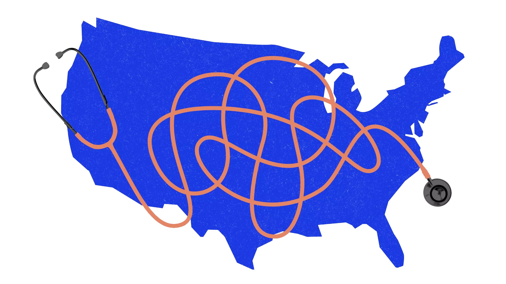

Universal Healthcare is a form of medical coverage that allows all people no matter their gender, race, income, etc. It usually includes most healthcare services that would be included in a normal paid healthcare system. 43 countries currently have a universal healthcare coverage system in place.